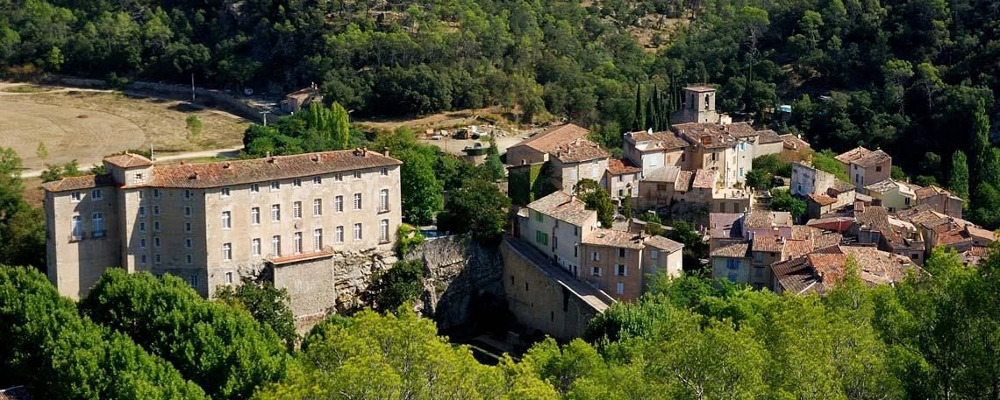

Débroussaillement suspendu jusqu’en septembre
De juin à septembre, l’usage d’outils motorisés ou métalliques est interdit : une étincelle suffit à déclencher un départ de feu. Les travaux lourds se font à l’automne et en hiver.
Lire la suite
Village de caractère au cœur de la Provence Verte, bâti sur un piton rocheux au-dessus de la Bresque, dominé par son château des XIe et XVIIe siècles et son jardin à la française.
De juin à septembre, l’usage d’outils motorisés ou métalliques est interdit : une étincelle suffit à déclencher un départ de feu. Les travaux lourds se font à l’automne et en hiver.
Lire la suiteLes personnes fragiles peuvent s’inscrire auprès de la mairie au 04 94 37 22 88 pour bénéficier d’un suivi régulier par un agent communal pendant les épisodes de forte chaleur.
Appeler la mairieDu 1er juillet au 31 août, les déchèteries de la Provence Verte ouvrent de 6 h 00 à 14 h 00 en continu. Les jours d’ouverture restent inchangés.
Provence VerteEntre châteaux — intercastellos — apparaît dès 1012 dans le cartulaire de l’abbaye Saint-Victor de Marseille. Mille ans plus tard, les calades, les fontaines et l’aqueduc racontent toujours la même histoire d’eau et de pierre.
Forteresse du XIe siècle remaniée aux XVe, XVIe et XVIIIe siècles, posée sur le rocher vingt mètres au-dessus du village. Propriété privée, habitée et meublée, ouverte aux visites guidées.
Monument historique · 1988Dessiné d’après les plans d’André Le Nôtre, jardinier de Louis XIV, à l’image de Versailles. La tradition veut qu’il les ait remis à la marquise de Sévigné, dont le gendre, le comte de Grignan, hérita du château.
XVIIIe siècle · accès libreÉglise fortifiée du XIIIe siècle, au bout des ruelles en calade. Deux chapelles complètent l’ensemble : Notre-Dame-de-l’Aube, du XIIe, et Sainte-Anne, du XVIIIe.
XIIIe sièclePonts, fontaines, lavoir, glacière et aqueduc de Pimaquet. La commune restaure ces techniques ancestrales avec la Fondation du patrimoine — la calade de la chapelle porte chaque année la procession de la sainte patronne.
Restauration en coursUne grande partie des démarches se fait désormais en ligne. Pour le reste, l’accueil de la mairie vous reçoit du lundi au vendredi.
Place du Général Estève
83570 Entrecasteaux
04 94 37 22 88
mairie@entrecasteaux.fr
| Lundi | 8 h 30 – 12 h 00 · 13 h 30 – 16 h 30 |
| Mardi | 8 h 30 – 12 h 00 · 14 h 30 – 16 h 30 |
| Mercredi | 8 h 30 – 12 h 00 · après-midi fermé |
| Jeudi | 8 h 30 – 12 h 00 · 14 h 30 – 16 h 30 |
| Vendredi | 8 h 30 – 12 h 00 · 13 h 30 – 16 h 30 |
| Samedi | Permanence 1×/mois, 8 h 30 – 12 h 00 |
| Secours (Europe) | 112 |
| Pompiers | 18 |
| SAMU | 15 |
| Gendarmerie | 17 |
Depuis la gare TGV des Arcs–Draguignan : D10 vers Taradeau et Lorgues, puis D562 vers Carcès, et D31 à droite avant Carcès. Depuis l’A8, sortie « Brignoles / Le Val » ou sortie « Le Muy » selon votre provenance.